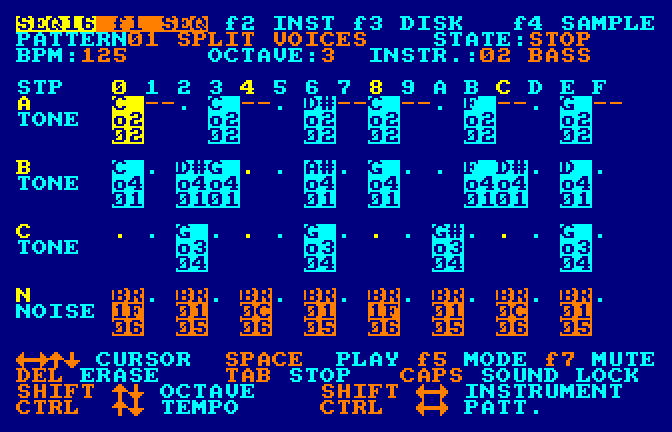
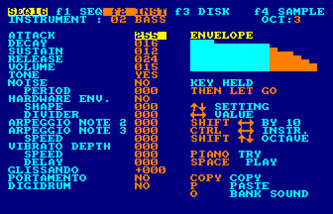
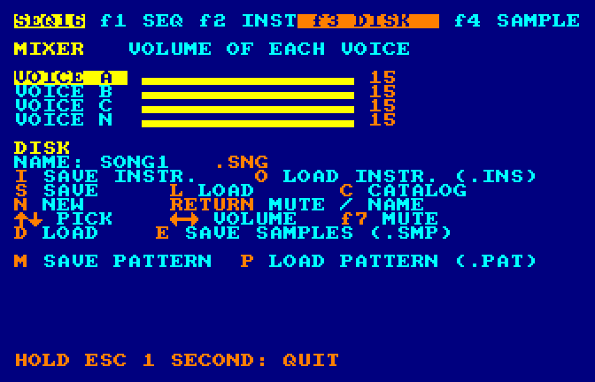
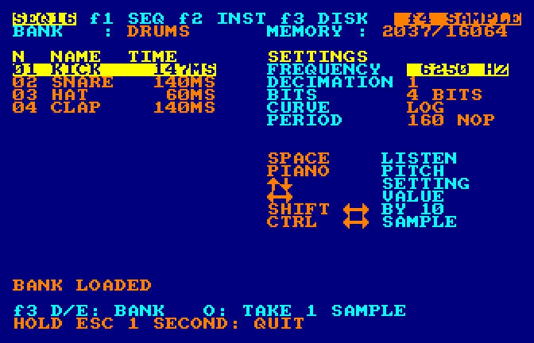

USER MANUAL
SEQ-16 manual
Every screen and every key of SEQ-16, with the labels exactly as the English disk (seq16-en.dsk) shows them.
Labels in yellow, like SOUND LOCK, are the texts you see on the CPC screen. Keys are shown as keycaps: CTRL + ←/→ means: hold CTRL and press the left or right arrow.
Start and quit
- Put
seq16-en.dskin the drive (or in an emulator set to CPC 6128). - Type
RUN"SEQ16and press RETURN. - Pick a screen with the function keys of the numeric keypad: f1 sequencer, f2 instrument, f3 mixer and disk, f4 sampler. The tabs at the top read f1 SEQ f2 INST f3 DISK f4 SAMPLE.
To quit, hold ESC for one second (HOLD ESC 1 SECOND: QUIT). A single press isn't enough, so you can't lose your work by mistake.
The default sounds stay inside the program: at startup and after a new song, you always get the same 32 instruments. Instruments 25 to 28 (USER1 to USER4) are free for your own sounds; 29 to 32 are the factory digidrums (DGKICK, DGSNAR, DGHAT, DGCLAP).
f1 · Sequencer
The top lines show the pattern number (PATTERN) and the mode, SPLIT VOICES or LAYERED SOUND, the state (STATE: PLAY or STOP), the tempo (BPM:), the input octave (OCTAVE:) and the input instrument (INSTR.:).
Below, the 16 steps (STP 0 to F) of voices A TONE, B TONE, C TONE and N NOISE: each cell holds a note, an octave and an instrument. In layered-sound mode, a single line SND 4 V. plays a layered sound (SOUND :) on all 4 voices at once.
A muted voice shows MUTE to the left of the grid.

| Keys | On screen | Effect |
|---|---|---|
| ←/→ ↑/↓ | CURSOR | move the cursor; you hear the note you land on |
| Piano keys | enter a note, hear it, move to the next step | |
| DEL | ERASE | clear the cell |
| TAB (or CLR) | STOP | note off (--) |
| CAPS LOCK | SOUND LOCK | lock the input instrument |
| SPACE | PLAY | play / stop |
| f5 | MODE | split voices / layered sound |
| f7 | MUTE | mute (or unmute) the voice under the cursor |
| SHIFT + ↑/↓ | OCTAVE | input octave |
| SHIFT + ←/→ | INSTRUMENT | input instrument (and that of the note under the cursor) |
| CTRL + ↑/↓ | TEMPO | tempo in BPM |
| CTRL + ←/→ | PATT. | previous / next pattern (32 patterns) |
f2 · Instrument
The instrument number and name (INSTRUMENT :), the test octave (OCT:), the list of settings on the left and the ENVELOPE drawing on the right (KEY HELD, THEN LET GO). The drawing updates on every change of attack, decay, sustain or release.

| Keys | On screen | Effect |
|---|---|---|
| ↑/↓ | SETTING | pick a setting |
| ←/→ | VALUE | change its value |
| SHIFT + ←/→ | BY 10 | change the value by 10 |
| CTRL + ←/→ | INSTR. | previous / next instrument (32 instruments) |
| SHIFT + ↑/↓ | OCTAVE | test octave |
| Piano keys | PIANO TRY | try the instrument |
| SPACE | PLAY | listen to the pattern with the modified sound |
| COPY | COPY | copy the instrument (settings and name) |
| P | PASTE | paste: the copied instrument replaces the one on screen |
| O | BANK SOUND | take a sound from a .INS bank on the disk: pick the bank, then one of its 32 sounds (arrows, RETURN; ESC cancels) |
The settings
Indented settings belong to the line above them (the noise period, the hardware envelope's shape and divider, the arpeggio speed, the vibrato speed and delay).
| Setting | Values |
|---|---|
| ATTACK | 0 to 255 |
| DECAY | 0 to 255 |
| SUSTAIN | 0 to 15 |
| RELEASE | 0 to 255 |
| VOLUME | 0 to 15 |
| TONE | YES / NO |
| NOISE | YES / NO |
| PERIOD | 0 to 31 |
| HARDWARE ENV. | YES / NO |
| SHAPE | 8 to 15 |
| DIVIDER | 0 to 7 |
| ARPEGGIO NOTE 2 | 0 to 24 |
| ARPEGGIO NOTE 3 | 0 to 24 |
| SPEED | 1 to 15 |
| VIBRATO DEPTH | 0 to 6 |
| SPEED | 0 to 255 |
| DELAY | 0 to 255 |
| GLISSANDO | signed value (+000) |
| PORTAMENTO | YES / NO |
| DIGIDRUM | YES / NO: see Digidrums |
Copying a sound into another instrument: pick the source instrument (CTRL + ←/→), press COPY, go to the target instrument, press P.
The DIGIDRUM setting (the last one): set to YES, the instrument plays a sample instead of a note. The PERIOD line then becomes SAMPLE followed by the sample's name: its value is the sample's number in the bank (0 = the first one).
f3 · Mixer and disk
The top part, MIXER VOLUME OF EACH VOICE, has one bar per voice (VOICE A, B, C, N). The bottom part, DISK, has the file name line NAME: (default SONG1) and the disk commands.

| Keys | On screen | Effect |
|---|---|---|
| ↑/↓ | PICK | pick a voice (A, B, C, N) or the file name |
| ←/→ | VOLUME | voice volume (0 to 15) |
| RETURN or f7 | MUTE / NAME, MUTE | mute / unmute (on the name line: type the name) |
| S | SAVE | save the song |
| L | LOAD | load the song |
| C | CATALOG | show the disk catalog |
| I | SAVE INSTR. | save the instruments: the 32 instruments and the 8 layered sounds, into NAME.INS |
| O | LOAD INSTR. (.INS) | load a .INS instrument bank (arrows, then RETURN; ESC cancels). Patterns don't change |
| D | LOAD | pick a .SMP sample bank on the disk (for the f4 screen): arrows, then RETURN; ESC cancels |
| E | SAVE SAMPLES (.SMP) | save the sample bank (with the settings made on f4), under its own name: DRUMS.SMP… |
| M | SAVE PATTERN | save the displayed pattern (the one on f1) alone, into NAME.PAT: its mode, tempo and 16 steps |
| P | LOAD PATTERN (.PAT) | load a .PAT pattern from the disk in place of the displayed pattern: the list shows every file in pages of 24 (arrows, RETURN; ESC cancels) |
| N | NEW | new song (press twice) |
| SPACE | listen to the pattern while adjusting |
The file name: go down to the NAME: line, press RETURN (TYPE NAME, THEN RETURN), type the name (8 letters or digits at most), then RETURN. The first letter you type replaces the old name; DEL corrects. The .SNG extension is added automatically.
Voice volume: the CPC's sound chip sends channel A to the left, channel C to the right and channel B to both sides. Depending on how you listen (internal speaker, a single earphone, an amp plugged into a single output), one channel can sound louder than the others: you balance it here, and the setting is saved with the song.
f4 · Sampler (Sample Composer)

The sound bank on the left (BANK :, MEMORY :, then N NAME TIME), the SETTINGS of the chosen sound on the right. The first time you open f4, the DRUMS.SMP bank loads by itself (LOADING DRUMS.SMP...). The chosen sample is in inverted yellow.
| Keys | On screen | Effect |
|---|---|---|
| SPACE | LISTEN | listen to the chosen sample (SPACE again: stop) |
| Piano keys | PIANO PITCH | listen to the sample higher or lower (±12 semitones). The top row, from the C key, plays the original pitch and goes up semitone by semitone; the bottom row plays an octave lower |
| ↑/↓ | SETTING | pick a setting: frequency, decimation, bits, curve |
| ←/→ | VALUE | change its value |
| SHIFT + ←/→ | BY 10 | change the frequency by 10 |
| CTRL + ←/→ | SAMPLE | previous / next sample |
| O | O: TAKE 1 SAMPLE | take a sample from another .SMP bank: it is added at the end of the bank in memory (16 samples and 16 KB at most) |
| f3 then D / E | f3 D/E: BANK | change bank / save the bank (settings and added samples included) |
The settings are those of the sample's record, in memory. They don't touch the data.
| Setting | Values | Effect |
|---|---|---|
| FREQUENCY | 4,000 to 16,129 Hz | pitch and brightness; lower is dirtier. → goes up, ← goes down |
| DECIMATION | 1, 2, 3, 4, 6, 8 | one sample out of N, held N times: strong aliasing |
| BITS | 4, 3, 2, 1 | fewer levels. At 1 bit, only levels 0 and 8 are left: a harsh, weak “beep” |
| CURVE | LINEAR, LOG, CLIPPED, FOLDED, INVERTED | a 16-value table between the sample and the volume (below) |
| PERIOD | (information) | the length of one sample in µs, i.e. in NOPs |
- LOG is the faithful rendering, the one of the preview WAVs.
- LINEAR treats each value as a linear amplitude, written as is into the AY, which is logarithmic. The sound is hollower and distorted.
- CLIPPED multiplies the signal by 2.5 and clips it.
- FOLDED also multiplies by 2.5, then folds back whatever goes over.
- INVERTED flips the waveform.
While a sample plays, the screen stops responding (PLAYING... (SPACE: STOP)): the processor does nothing but play the sample, with interrupts disabled. The other AY channels keep sounding with their last settings. If the pattern was playing, its envelopes, arpeggios and vibratos are frozen until the end of the sample. That's on purpose.
Songs: saving and loading
A .SNG file (about 9 KB) holds the whole song:
- the 32 patterns;
- the 32 instruments and their names;
- the 8 layered sounds;
- the volumes and muted voices;
- the name of the sample bank used (format version 2).
- On f3, go down to NAME:, press RETURN, type the name, then RETURN.
- S saves the song (SAVING..., then SONG SAVED). If a file with the same name exists, AMSDOS keeps the old one with the
.BAKextension. - To load: type the name the same way, then L (SONG LOADED). C shows the catalog if you forgot the name.
When a version 2 song is loaded, its sample bank is reloaded if it isn't the one in memory (SONG AND SAMPLE BANK LOADED). If it isn't on the disk, the song loads anyway (SONG LOADED (.SMP BANK MISSING)). Songs in the old format (version 1, saved before digidrums) still load.
Messages
| Message | Meaning |
|---|---|
| ENTER A NAME FIRST (RETURN) | the NAME: line is empty |
| DISK ERROR (DISK? NAME?) | no disk, or no file with this name |
| THIS FILE IS NOT A SEQ-16 SONG | the file isn't a SEQ-16 .SNG |
| N AGAIN: ERASE EVERYTHING? | press N again to start a new song (NEW SONG) |
| INSTRUMENTS SAVED (.INS) / INSTRUMENTS LOADED | after I / O on f3 |
| SAMPLE BANK SAVED (.SMP) | after E on f3 |
| ARROWS THEN RETURN (ESC: CANCEL) | a file list is open: pick with the arrows |
| NO FILE OF THIS TYPE ON THE DISK | no .INS or .SMP file found |
| NO BANK: f3 THEN D | f4 has no bank in memory |
| BANK TOO BIG FOR MEMORY | the .SMP bank doesn't fit in memory |
| BANK ALREADY HAS 16 SAMPLES | O on f4: the bank is full |
Sound banks
The banks on the disk come on top of the program's default sounds. The bank names are French file names, kept as is in every version.
Instrument banks .INS (13 banks, 416 sounds)
A .INS bank holds 32 instruments, their names and 8 layered sounds (848 bytes). You can:
- load a whole bank: screen f3, key O, arrows, RETURN;
- take a single sound for the instrument on screen: screen f2, key O, then pick the bank and the sound;
- save your own instruments: screen f3, key I (file
NAME.INS, with the name from the NAME: line).
| Bank | Contents |
|---|---|
USINE (factory) | the program's 32 default instruments (to get them back after loading another bank) |
BATTERIE (drums) | kick drums, snares, hi-hats, toms, cymbals, cowbell, claves |
BASSES | short, long, sliding, “buzzer”, dirty and wobble basses |
LEADS | melody sounds: vibratos, portamentos, sync, trills |
NAPPES (pads) | slow pads, held chords, choirs, organs |
ARPEGES | arpeggiated chords at 3 speeds: major, minor, 7th, sus, diminished… |
EFFETS (effects) | lasers, sirens, coins, jumps, explosions, engines |
BUZZER | the AY's hardware envelope: 4 shapes × 3 dividers, and variants |
CLAVIERS (keyboards) | pianos, plucked strings, bells, organs, winds |
CHIPTUNE | a complete bank for a video game tune |
PERCUS | congas, bongos, claves, triangle, tablas, gong |
GLISSES (slides) | portamentos, glissandos up or down |
BRUITS (noises) | noise held at 10 pitches, wind, rain, sea, train |
Sample banks .SMP (9 banks)
DRUMS.SMP is the default bank: it loads by itself the first time you open f4. To use another one: screen f3, key D, pick the bank with the arrows, RETURN, then f4. On f4, the O key takes a single sample from another bank and adds it to the bank in memory; f3 + E saves the result.
| Bank | Contents | Size |
|---|---|---|
DRUMS | KICK, SNARE, HAT, CLAP (the factory digidrums) | 2 KB |
VOIX (voices) | “bonjour”, “Amstrad”, “SEQ 16”, “1, 2, 3, 4” (spoken in French) | 13 KB |
BATTERI2 | drum-machine style kit: long kick, toms, cowbell, crash… (12 sounds) | 12 KB |
PERCUS | congas, bongo, claves, triangle, tambourine, agogo, tabla… (12 sounds) | 13 KB |
EFFETS (effects) | laser, zap, explosion, coin, jump, siren, alarm, UFO… (12 sounds) | 14 KB |
BASSES | 10 bass notes (C), to play with the f4 piano | 15 KB |
NOTES | plucked, piano, bell, organ, brass, choir, orchestra… (10 notes, C) | 14 KB |
CHIFFRES (numbers) | “zéro” to “dix” (zero to ten, in French) | 11 KB |
MOTS (words) | “allez”, “oui”, “non”, “encore”, “stop”, “bravo”, “CPC”… (14 French words) | 16 KB |
All the sounds are synthesized or spoken by espeak: no samples taken from the Internet, so no rights issues. The banks are also on the data disks seq16-inst.dsk (.INS) and seq16-samples.dsk (.SMP).
Samples, step by step
The CPC has no digital-to-analog converter. It plays a sample by changing the volume of an AY channel very fast: 16 levels on an almost logarithmic curve. That's what gives the grain, and degradation is the goal: grain, aliasing, hiss and choppiness are intended, adjustable effects.
- Start. Insert
seq16-en.dskand typeRUN"SEQ16. - Open the samples screen. Press f4, the 4 key on the numeric keypad. The first time, the
DRUMS.SMPbank loads by itself, and its 4 sounds show up on the left. - Listen. Pick a sample with CTRL + ←/→. SPACE plays it at its original pitch; SPACE again stops it. The piano keys play it higher or lower: the top row, starting from the C key, starts at the original pitch and goes up semitone by semitone; the bottom row plays an octave lower. While it plays, the screen freezes: that's normal.
- Dirty up the sound. On the right, pick a setting with ↑/↓ and change its value with ←/→ (for the frequency, with SHIFT, in steps of 10). Listen again after each change.
- FREQUENCY: lower means deeper and dirtier.
- DECIMATION: from 2 to 8, metallic whistles appear.
- BITS: from 3 down to 1, the sound becomes more and more "beep".
- CURVE: CLIPPED, FOLDED, LINEAR and INVERTED distort the sound; LOG is the original sound.
- Change bank. Go to f3 and press D. The list of
.SMPfiles on the disk shows up at the bottom: pick with the arrows, RETURN loads the bank, ESC cancels. Go back to f4. (The NAME: field of f3 is only for.SNGsongs.) - Add a sample from another bank. On f4, press O, pick the bank and the sample: it is added at the end of the bank in memory (SAMPLE ADDED TO BANK).
- Save the bank. f3, then E: the bank is saved under its own name, with the settings made on f4 and the added samples.
- Make your own sounds on the PC from WAV files, with the SAMPLES SEQ-16 tab of CPC DISK or
tools/wav2smp.py.
Good to know
- A bank is 16 KB at most, i.e. about 4 seconds at 8 kHz, or 5 seconds at 6.25 kHz. A bank holds 16 sounds at most.
- If the pattern was playing during a preview, it freezes for the length of the sample, then resumes.
- Want to hear it right away?
VOIX: f3, D, pick VOIX, RETURN, then f4. At BITS 2 or with the CLIPPED curve, the voice becomes a very dirty robot.
Digidrums: samples in the song
A digidrum is an instrument that plays a sample from the loaded bank instead of a note. The 4 factory instruments 29 to 32 (DGKICK, DGSNAR, DGHAT, DGCLAP) play the 4 sounds of DRUMS.SMP.
Make one yourself, on the f2 screen
- Set the last setting, DIGIDRUM, to YES.
- The PERIOD line becomes SAMPLE and shows the sample's name. Change its value with ←/→: 0 = the first sample in the bank, 1 = the second…
- VOLUME sets the sample's strength (15 = full, below that: softer). The other settings aren't used.
- Try it with the piano: the sample plays right away.
In the sequencer
Enter the digidrum like a note:
- the pitch: the note C in octave 4 (top row of the piano, input octave 3) plays the sample as is; each semitone above or below makes it higher or lower, up to ±12 semitones;
- the voice picks the AY channel: A, B or C. On voice N (noise), the sample plays on channel C, at its original pitch;
- a muted voice (f7) doesn't play its digidrums.
BLOCKING mode. The sample plays in full at the end of the frame, with interrupts disabled. Then the sequencer catches up with the tempo: it moves forward as many frames as the sample lasted, so the following steps land on time. During the sample, the screen and keyboard stop responding; the other voices keep sounding, but their envelopes, arpeggios and vibratos are frozen. This freeze is part of the sound.
Keep digidrums short: under 150 ms (the 4 sounds of DRUMS.SMP are). A longer sample makes the interface and the other voices "stutter".
Known limits
- Memory is full. If f4 shows NOT ENOUGH MEMORY, samples, digidrums and the O key on f2 are disabled; everything else works.
- Sample banks must fit in the 16,064 bytes of main memory (about 4 seconds at 8 kHz); 16 samples at most.
- The bank list (f3, then D) only works on drive A.
- Instrument banks are read byte by byte: this is tested in the simulator, not yet on the real machine.
- Tempo catch-up after a digidrum is computed from the sample's theoretical length: over 32 bars, a small drift is still possible.
- A "click" at the start or end of a sample is possible, when the volume goes from the engine's setting to the first sample.
- Above about 6 kHz, the SPACE key test lengthens one sample out of 256: a very slight sizzle is possible.
Not there yet
- editing layered sounds on screen;
- chaining patterns into a song;
- renaming instruments;
- block copy-paste;
- samples: extra 6128 memory, CHOPPED mode, f4 finishing touches (waveform, trimming, loop).
The full technical notes are in the repository README.